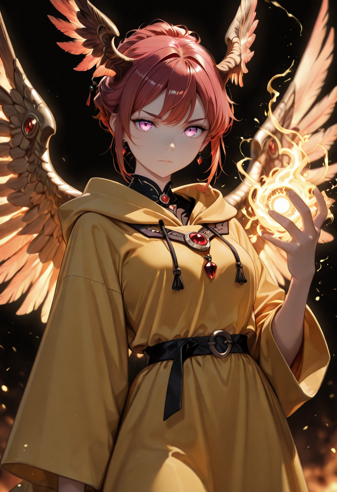
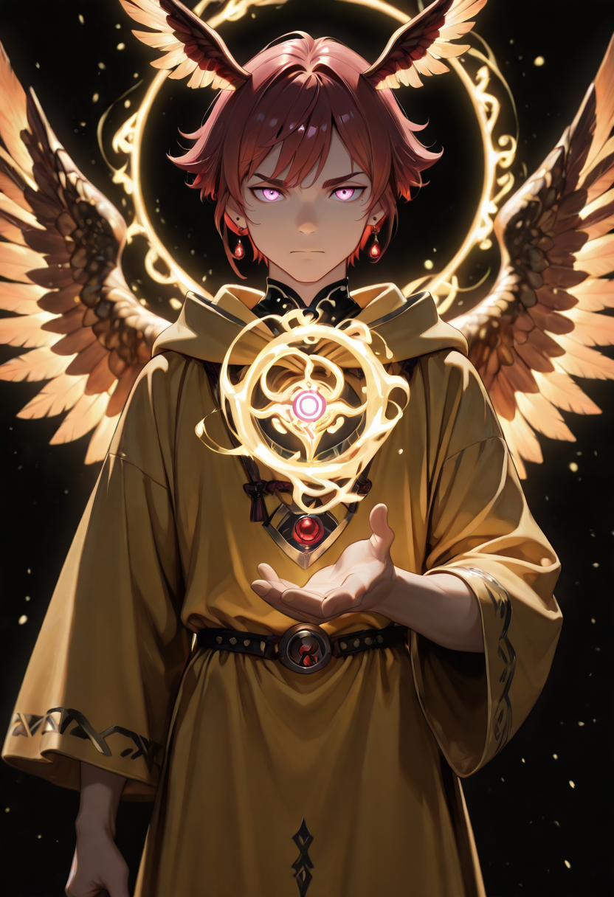
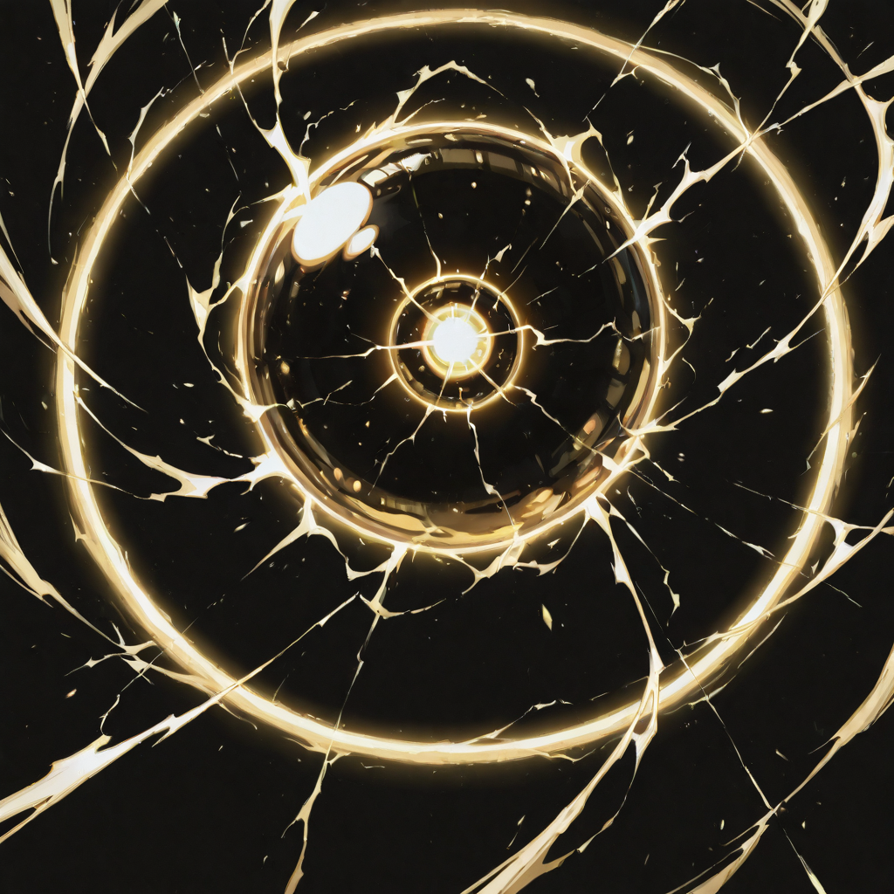
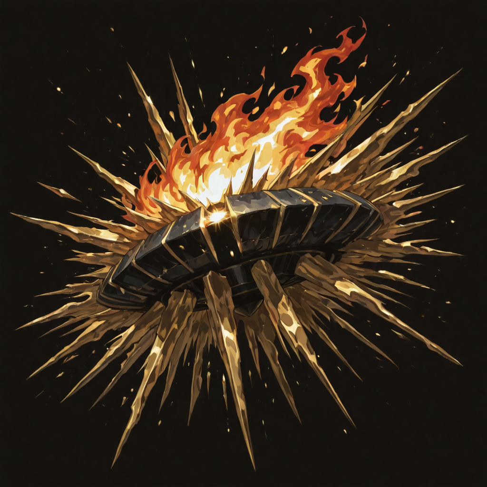
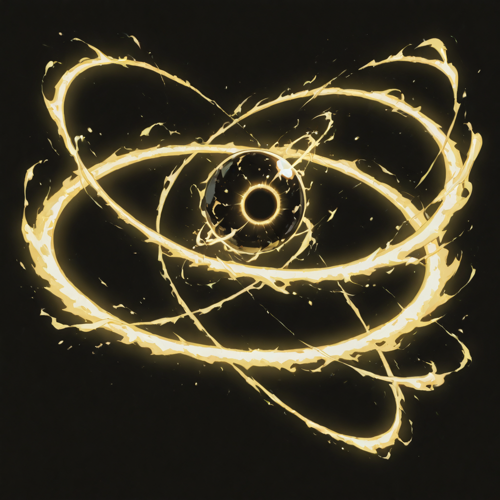

The Sword That Burns
The Sun Valkyries were divine intermediaries who served the old light-pantheons , those that existed before the gods who now claim uncontested territory. They understood solar theology not as metaphor but as physics. The sun does not love you. It simply radiates in all directions with equal intensity, and the things that can survive that intensity are the things worth preserving. Everything else combusts.
Death changed their relationship to the sun they served. Malicott's sap replaced faith with something more direct: the fire is now inside, and it has always been hers. She does not invoke the sun anymore. She is the sun , a small, controlled one, but genuine.
The Sun Valkyries are the highest-damage Araldi units in the T4 bracket. The trade is simple: they move like the light they channel , in straight lines, fast, with no mechanism for subtlety. What they bring is absolute luminous violence from above, and the discipline to deliver it precisely.
Tactical Data

Solar Strike
Base Skill
Blazing Burst
Active Skill
Solar Halo
PassiveGallery